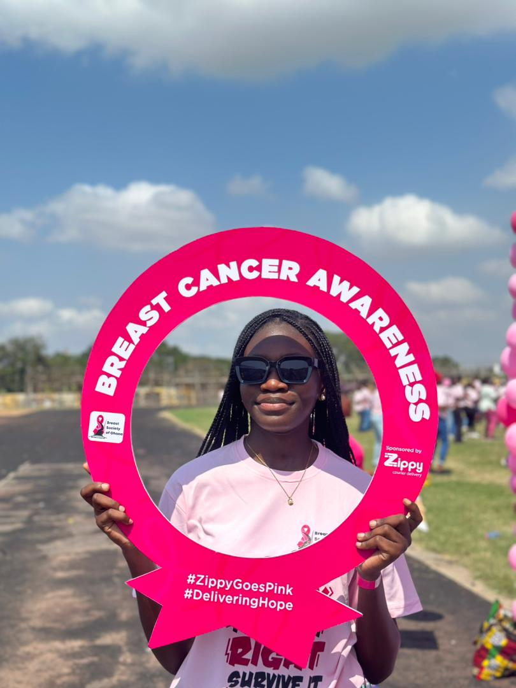

Patience Agyiri Andoh
Graduate, BSc. Biological Sciences
Kwame Nkrumah University of Science and Technology (KNUST), Kumasi - Ghana
About Me
My name is Patience Maame Efua Agyiri Andoh, and I am a 22-year-old graduate of the Kwame Nkrumah University of Science and Technology, where I pursued a bachelor's degree in Biological Sciences. Outside of academics, I enjoy reading, debating, watching movies, and listening to music. Interestingly, I find cooking therapeutic when I’m stressed—even though I used to dislike it.
As a woman in STEM, I aspire to become a research scientist specializing in cancer biology. It’s a field that deeply inspires me, and I hope to contribute meaningfully to the global fight against cancer. Fun fact: I absolutely love plantain chips and ice cream—I could live on them forever!
I strongly believe in the freedom of emotional expression, as long as it doesn't cause harm to others. I also believe that God is the creator of the universe and sovereign over all things. For me, life is about doing our best and trusting God with the rest.
Education
Undergraduate Studies
-
Biological Sciences, Jan. 2022 to Sept. 2025
Kwame Nkrumah University of Science and Technology, Kumasi - Ghana
Research Interests
- Cancer Biology
- Biology Education